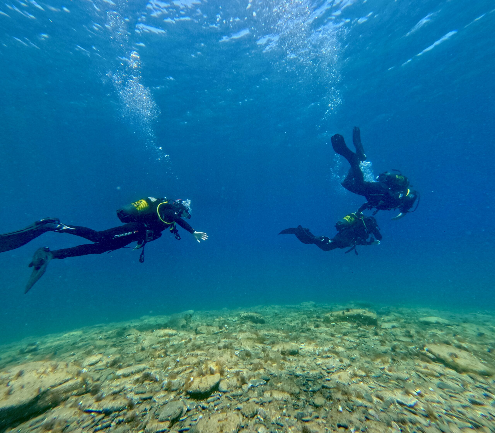

Inmersiones para todos
Tanto si es tu primera vez como si ya sos buceador certificado, tenemos la experiencia perfecta para vos en las aguas cristalinas de Cadaqués.
Bautizo de Buceo
¿Nunca has buceado? No importa. Nuestros instructores PADI certificados te acompañan en cada paso, desde el equipo hasta la inmersión. Solo necesitás ganas de explorar.
- Sin certificación previa necesaria
- Briefing completo de seguridad
- Equipo CRESSI incluido
- Instructor PADI a tu lado siempre
- Apto mayores de 8 años
- Máximo 4 personas por instructor

Open Water Diver
La certificación más popular del mundo. Bucea hasta 18m de profundidad en cualquier parte del mundo.
- 3-4 días de formación
- Teoría + prácticas en aguas confinadas
- 4 inmersiones en mar abierto
- Certificación PADI Internacional
Advanced Open Water
Amplía tus habilidades con inmersiones especiales. Alcanza hasta 30m de profundidad.
- 2 días de formación
- 5 inmersiones de aventura
- Navegación subacuática
- Inmersión de profundidad incluida
Rescue Diver
El curso más valorado por los buceadores. Aprendé a prevenir y gestionar problemas bajo el agua.
- Requiere Advanced OW + EFR
- Técnicas de rescate reales
- Gestión de situaciones de emergencia
- Boost en confianza y habilidades
Divemaster
El primer nivel profesional PADI. Liderá inmersiones y asistí en la formación de nuevos buceadores.
- Programa intensivo
- Prácticas reales en el centro
- Trabajo en Cap de Creus
- Certificación PADI Pro
Excursiones Guiadas
El Parque Natural Cap de Creus es uno de los espacios marinos más espectaculares del Mediterráneo. Nuestros guías locales conocen cada rincón de sus fondos.
- Guías locales expertos en Cap de Creus
- Grupos reducidos (máx. 6 personas)
- Múltiples puntos de inmersión
- Para todos los niveles certificados
- Equipo CRESSI disponible
- Salidas en barco incluidas

Snorkel
La forma más accesible de descubrir el mundo submarino. Perfecto para toda la familia, sin necesidad de experiencia previa.
- Equipo de snorkel CRESSI incluido
- Apto para toda la familia
- También paddle surf disponible
- Alquiler por horas o día completo
- Mapas de calas recomendadas